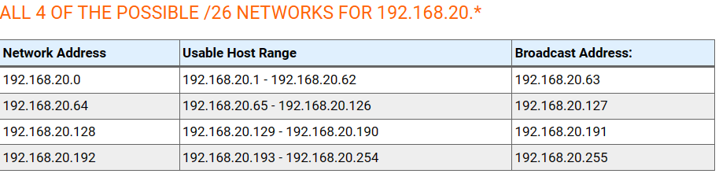
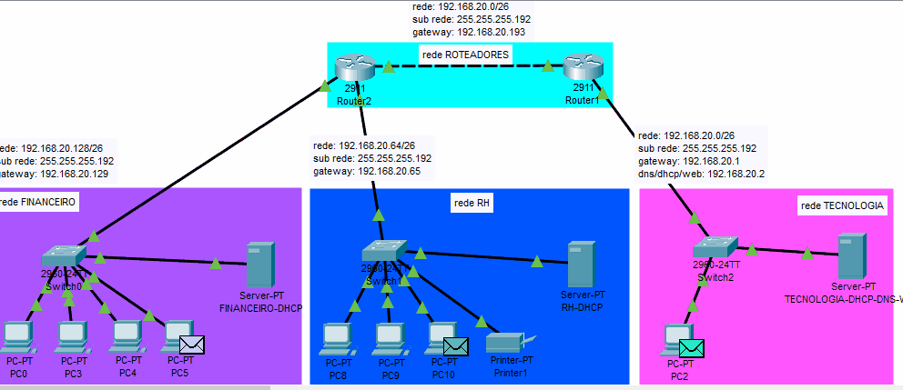

Curso de redes - projeto final
Desenvolvido por Paula Leite - Professor Daniel Gundim
Objetivo Final:
Realizar a criação de 4 redes diferentes no Cisco Packet Tracer e realizar a comunicação entre elas. As redes devem seguir a orientação abaixo:
• Deve-se utilizar a rede 192.168.20.0 .

Essa rede deve conter 4 subredes de tamanho igual que vão corresponder aos seguintes departamentos:• Rede Tecnologia:
- Criação de 1 computador dentro da rede utilizando IP fixo;
- Criação de 1 servidor DNS que resolverá os domínios das outras duas redes: Financeiro e RH;

• Rede RH:
- Criação de 3 computadores/notebooks dentro da Rede utilizando DHCP;
- Criação de 1 uma impressora utilizando IP fixo; O único servidor desta rede deve servir um site(rh.ada) HTTP com o conteúdo apresentando a palavra "RH" e disponibilizar o serviço DHCP. Este servidor deve ter IP fixo;

• Rede Financeiro:
- Criação de 4 computadores/notebooks dentro da Rede utilizando DHCP;
- O único servidor desta rede deve servir um site(financeiro.ada) HTTP com o conteúdo apresentando a palavra "Financeiro" e disponibilizar o serviço DHCP. Este servidor deve ter IP fixo;

• Rede Roteadores:
- A função dessa rede é conectar os dois roteadores;
- Deve ser configurada uma rota estática entre os dois roteadores para permitir acesso as demais redes;

• As redes devem ser distribuídas da seguinte forma:
- Roteador 1:
- Rede Tecnologia;
- Rede Roteadores;
- Roteador 2:
- Rede financeiro;
- Rede RH;
- Rede Roteadores
• Equipamentos:
- Utilizar os seguintes dispositivos Router 2911 e Switches 2960 24TT;
• Explicação:
- O objetivo final é que os dispositivos da Rede Financeira consigam se comunicar com os dispositivos da rede do RH e da Tecnologia. Deve ser permitido que um dispositivo da rede Financeiro acesse o site da rede RH e vice versa. Lembrando que todos os DNS´s devem ser resolvidos pelo servidor DNS da tecnologia; Visão Final::

Testes: